Commands window provides two types of functionalities i.e. Normal Functions, Advanced Function. Normal functions provide features like Start, stop course etc. and advanced functions provides features like push new recording, check schedule etc.
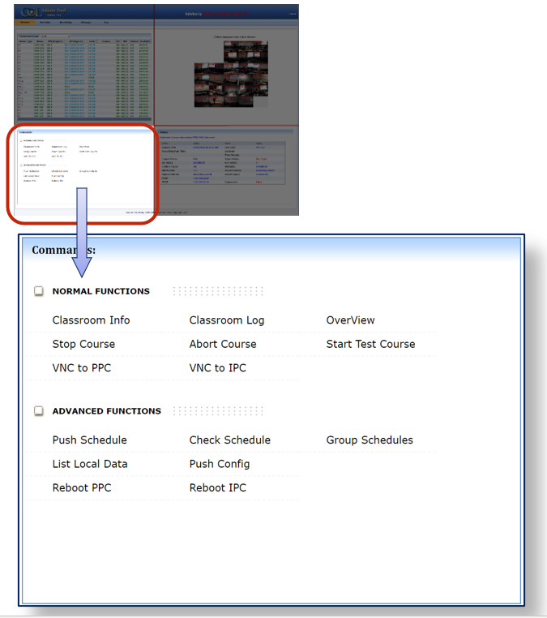Normal Functions
- ► Classroom Info: Gives the detailed information about the Selected Classroom
- ► Classroom Log: Inactive feature
- ► Overview: Inactive feature
- ► VNC to PPC: Remote Connection for Production PC (Inactive feature)
- ► VNC to IPC: Remote Connection for Instructor PC (Inactive feature)
- ► Stop Course: This command enables the user to end an ongoing recording prematurely, before it is scheduled to end. The portion recorded until that point is retained and uploaded and the COL Engine stops recording from that point onwards. (i.e. If a recording is scheduled to run from 5:45 pm to 9:00 pm, but is STOPPED at 7.00pm, the portion recorded from 5:45 until 7:00 is processed and uploaded after which the COLEngine goes back to IDLE)
-
Steps to Stop Recording
- 1. If you need to stop an ongoing lecture recording, please make sure the classroom, course etc. are accurate before attempting to stop the recording.
- 2. First select the classroom where an ongoing recording needs to be stopped.
- 3. From the Commands, select Stop Course.
- 4. A confirmation window will appear on the screen, as below
- 5. Verify the classroom and the Coursename for the recording you are trying to stop
- 6. After verification, press OK button to stop the recording.
- 7. The Output should display: Command [stop course(classroom)]-Success!.
- 8. After being stopped, the recording will start processing and will upload shortly
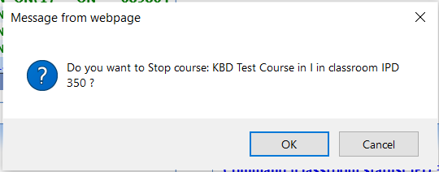
- ► Abort Course: This command enables the user to end an ongoing recording – but the recorded portion until that point is not uploaded. This action is equivalent to canceling the recording entirely. (e.g. If a recording is scheduled to run from 5:45 pm to 9:00 pm, but is ABORTED at 7.00pm, the recording ends and the COLEngine goes back to IDLE. The portion recorded from 5:45 until 7:00 is disregarded completely. It stays on the PPC but is neither processed nor uploaded.)
- Steps to Abort Recording.
- 1. If you need to abort an ongoing lecture recording, please make sure the classroom, course etc. are accurate before attempting to abort the recording.
- 2. First select the classroom where an ongoing recording needs to be aborted
- 3. From the Command select the Abort Course
- 4. A Confirmation window will appear on the screen, as below
- 5. Verify the classroom and the Coursename for the recording you are trying to abort.
- 6. After verification, type first 8 letters of the course name in the Confirmation box
- 7. The output should display: Command [abort course(classroom)]-Success!.
- 8. After being aborted, the recording will be ended and will be discarded (not uploaded.) 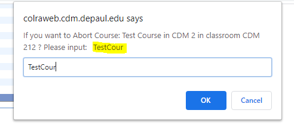
- ► Start Test Course: This command is used to manually start a recording in the selected classroom. When this command is selected, a form is generated in the output window, as below, for the user to enter details of the recording to be started:. 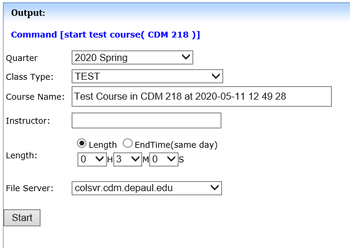
- Quarter: Select Quarter (Default is current quarter)
- Class Type: Select type of recording to start. Options are TEST, SEMINAR or CTI 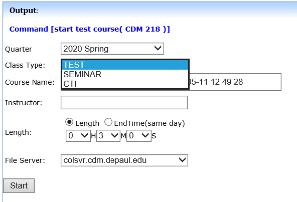
- TEST: Recordings under the TEST category are internal to the RA website and only accessible to authorized RA users. The COL staff uses the TEST type when carrying out daily maintenance recordings
- SEMINAR: Recordings under the SEMINAR category are unencrypted recordings. Once they upload, their playback link can be retrieved from the RA website by an admin and provided to the DePaul staff or faculty member who requested the recording. Since these are unencrypted recordings, their playback link can be universally distributed and they can be played by anyone who has the link.
- CTI: Recordings of type CTI are College of CDM lecture recordings. They are encrypted by course name and become automatically available to students and instructor of that course immediately after uploading.
- Course Name: Enter the name of the recording, depending on the type selected:
- TEST: Course Name is Test Course in [Classroom] at [date] [time] (editable)
- CTI: The Course Name is a dropdown list of all current CDM courses
- SEMINAR: Course Name is Test Course in [Classroom] at [date] [time] (editable) 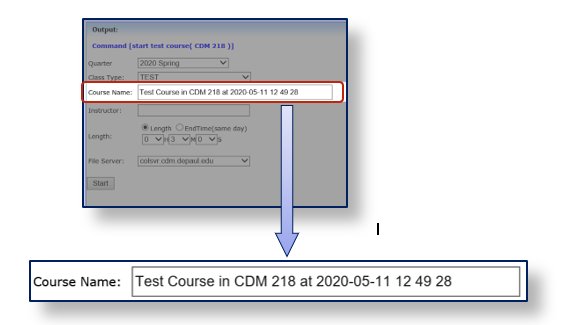
- Instructor : Enter name of the instructor. (If CTI type is selected, then after selecting the Course Name, that course instructor’s name gets automatically filled in here)
- Length : Specify the duration of the recording from the time it begins, in one of two ways;
- Length: Enter the desired length of the recording in Hours, Minutes and Seconds - __H(ours) __M(inutes)__S(econds) E.g. For a recording of 1 hour 15 minute duration, select Length > 01H 15M 00S 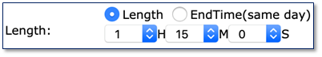
- End Time: Select the exact time (that same day) at which the recording should stop, specify it in 24 hr. format as __:__:__ E.g. For a recording to end at 9:15 PM, select End Time > 21:15:00 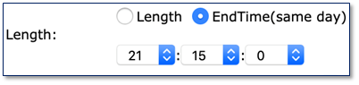
- File server: colsvr.cdm.depaul.edu (default)
- Start Button: To start the test recording 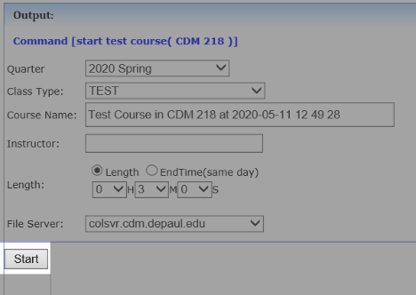
Advanced Functions
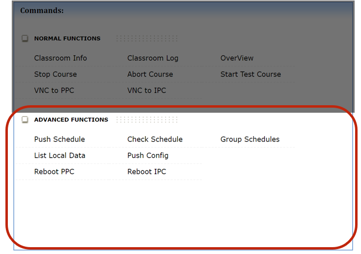- ► Push Schedule: Updates that classroom PPC’s local recording schedule with any recent changes that were made to that classroom’s recording schedule via RA website.
- ► Check Schedule: Shows all upcoming recordings scheduled in the selected classroom. (Pending changes that have not been Pushed yet, show up in Red)
- ► Group Schedule: Displays the list of all upcoming recordings scheduled in all the classrooms in the current Group, for the selected date.
- ► List Local Data: Displays the recorded data currently present on the PPC of the selected classroom.
- ► Push Config: When this command is run on a classroom, IP confirmation requests get sent from the RA website to the IPC and PPC of the selected classroom, as well as from the IPC and PPC to each other. On receiving this request, the IPC (via the COLAgent application) and PPC (via the COL Engine application) then respond to the RA website and to each other, confirming their IP addresses are the same as what the RA website expects them to be for that classroom. The result of the Push Config command can be seen in the Output window 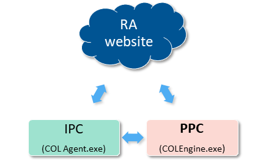
- ► Reboot PPC: Restarts the Production PC
- ► Reboot IPC: Restarts the Instructor PC.
- ✖ Does not work on an IS imaged IPC because restart is disabled by their Group Policy.
- ✖ Also does not work on Mac IPC
Push Config Output:
Command [push config to ppc( CDM 632 )]-Success! - The RA website was successfully able to contact the PPC at its preset IP address
Command [push config to ipc( CDM 632 )]-Success! - The RA website was successfully able to contact the IPC at its preset IP address
NOTE: The Reboot IPC command only works with CDM Windows IPC, and the IPC must be in the logged-in state for the command to work i.e. COLAgent needs to be running.